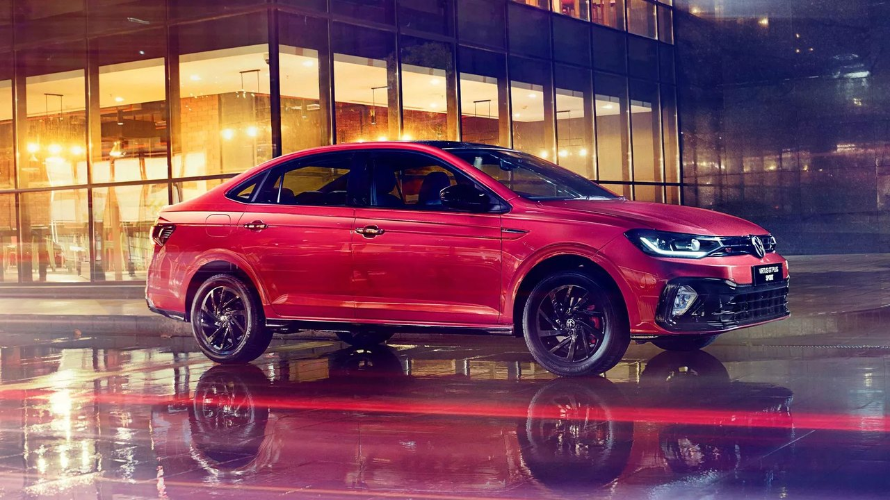
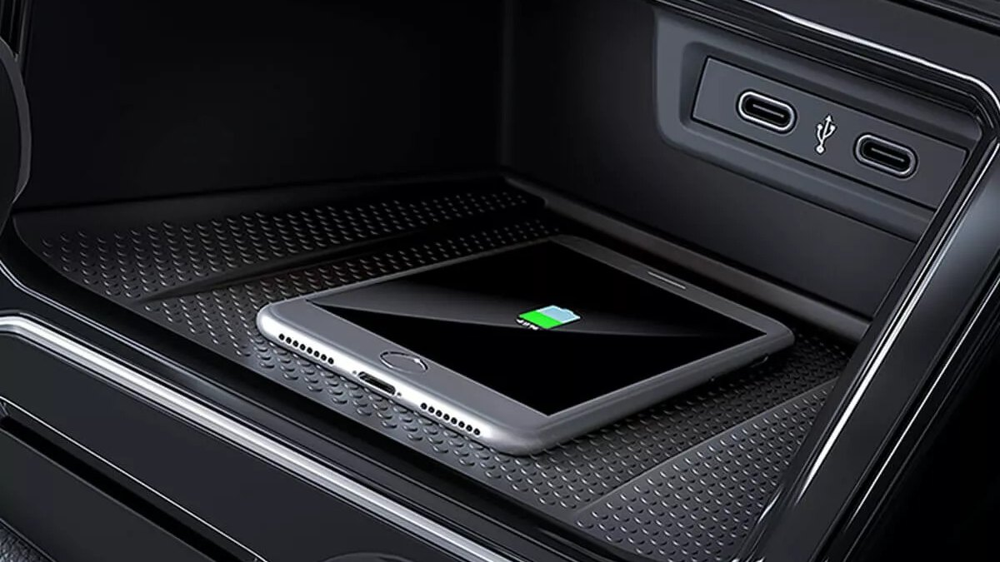
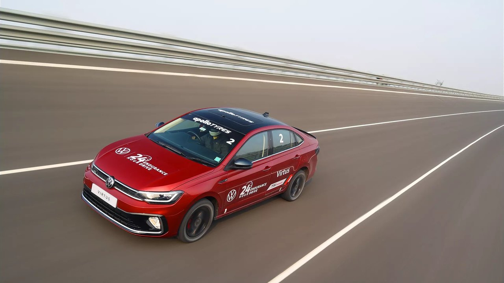
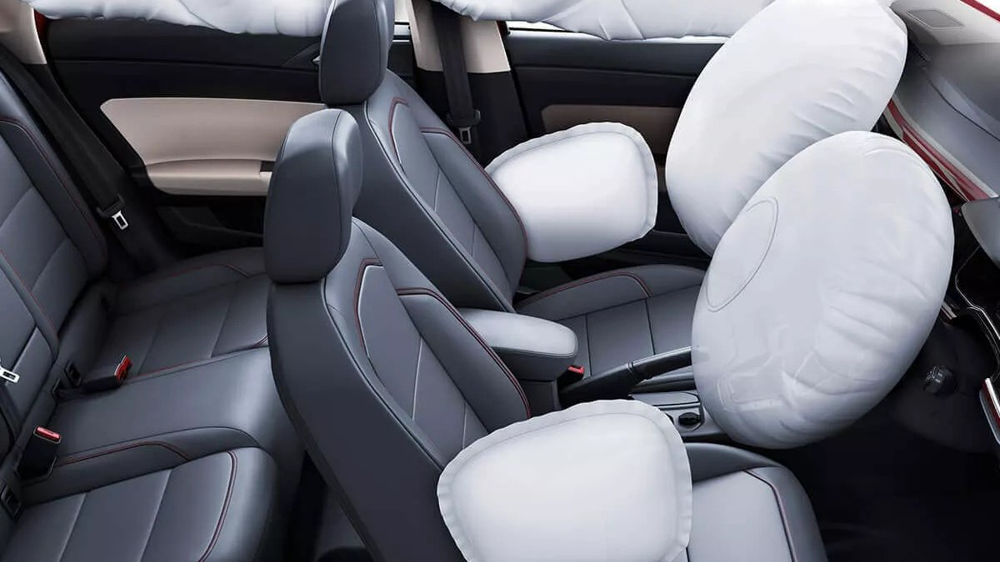
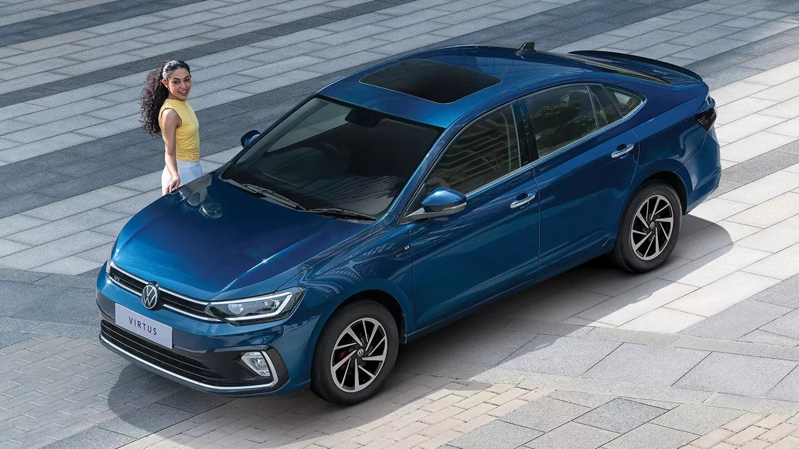

Volkswagen Virtus 2026: 1.0 TSI or 1.5 TSI?

AI illustration: FlamingPiston
Published Oct 23, 2026 · Updated Nov 21, 2026
7 min read
Category: Sedan
The Virtus is still one of the best-driving sedans you can buy, with a choice of an easy 1.0 TSI or a fast 1.5 TSI. But Volkswagen has already revealed a facelift, and Autocar India reports it goes on sale on 11 December. That changes the advice for anyone buying now.
A Note on This Review
This review uses Volkswagen India’s published specifications, the Global NCAP report, current listed prices and other publications’ drives, not our own test. Prices and specifications were checked on 21 November 2026. See our Review Methodology for how we separate editorial assessment from measured testing.
Quick Verdict
The Virtus drives, rides and protects its occupants better than most cars at its price. The 1.0 TSI automatic is the sensible choice for most buyers, and the 1.5 TSI DSG is for people who will use the extra performance. With a facelift weeks away, either wait for it or use it to negotiate a clear discount on the current car.
1
Volkswagen Virtus Price & Variants (2026)
₹10.71 – ₹19.20 Lakh*
*Ex-showroom, as listed by CarWale and CarDekho in November 2026. Volkswagen India publishes the starting price only.
| Trim | Ex-Showroom Price |
|---|---|
| Comfortline | ₹10.71 lakh |
| Highline | ₹13.51 – 14.71 lakh |
| Highline Plus | ₹13.91 – 15.00 lakh |
| GT Line | ₹14.35 – 15.25 lakh |
| Topline | ₹15.16 – 16.35 lakh |
| GT Plus (1.5 TSI DSG) | ₹18.85 – 19.20 lakh |
Volkswagen now splits the range into Chrome trims (Comfortline, Highline, Highline Plus and Topline) and Sport trims (GT Line and GT Plus). The 1.5 TSI comes only in the GT Plus, which is why the jump from GT Line to GT Plus is so large: it buys a different engine and gearbox, not just more equipment. A ₹19.20 lakh Anniversary Edition was added in August.
Volkswagen India has revealed a facelifted Virtus with a new bumper, grille and alloy wheels, and has not announced prices. Autocar India reports that it goes on sale on 11 December 2026. If you buy the current car now, ask the dealer in writing about the discount, and check the manufacturing date on the car you are offered.
2
Exterior Design
The Virtus is a conventional three-box sedan and does not try to look like an SUV. It is 4,561 mm long, 1,752 mm wide and 1,507 mm tall on a 2,651 mm wheelbase. Volkswagen quotes 179 mm of ground clearance unladen, generous for a sedan, though that figure drops with a full load. The GT trims add black details and red GT badges.
The facelift changes the front bumper, grille and wheels but keeps the shape. If the current car’s look already appeals to you, the update is not a reason to wait on its own.

Image: Volkswagen India
3
Interior Design & Practicality
Autocar India found the cabin well built and the front seats supportive, with excellent visibility for a sedan. A few lower plastics feel basic, and the touch-sensitive climate controls are easy to brush by accident. The rear seat has plenty of legroom and good thigh support. It is not wide enough for three adults on long trips, but all three seats get headrests and three-point belts.
The boot holds 521 litres, one of the biggest in the class, and grows to 1,050 litres with the rear seats folded.
Image: Volkswagen India
4
Features & Safety
Six airbags and electronic stability control are standard. Depending on trim, the Virtus has an electric sunroof, ventilated front seats, a 10-inch touchscreen with wireless Android Auto and Apple CarPlay, wireless charging and a digital instrument cluster. Equipment varies by trim, so check the variant sheet for the features you want.
The current car has no driver-assistance systems. Autocar India expects the facelift to add a 360-degree camera, front parking sensors and a larger 10.25-inch driver’s display. If those matter to you, waiting is the better choice.

Image: Volkswagen India
5
Mileage, Engine & Performance
Both engines are turbo-petrols. There is no diesel or hybrid.
| Engine | Power / Torque | Transmission Options |
|---|---|---|
| 1.0L TSI Turbo-Petrol (3-cyl) | 115 PS / 178 Nm | 6-speed Manual, 6-speed Automatic (torque converter) |
| 1.5L TSI Turbo-Petrol (4-cyl) | 150 PS / 250 Nm | 7-speed DSG (dual-clutch) |
Autocar India found the 1.0 TSI eager and responsive, with occasional low-speed lag, some three-cylinder grumble and an automatic that sometimes pauses before downshifting. The 1.5 TSI with the DSG is very quick, with only occasional hesitation as the gearbox protects its clutches. It also has cylinder deactivation to save fuel when cruising. A Virtus GT 1.5 set an Indian 24-hour distance record of 4,654.48 km at the Natrax test track.
Claimed ARAI figures sit roughly between 18 and 21 kmpl depending on engine and gearbox, but CarWale and CarDekho list different numbers for each version, so we have not printed a single figure. Ask the dealer for the certified figure of the exact variant.

Image: Volkswagen India
6
Tech & Safety Deep-Dive
This section draws on the published Global NCAP report and other publications’ drives, not our own, in line with our Review Methodology. Global NCAP gave the Virtus five stars for adult and child protection in 2023, under its updated, tougher protocol. It scored 29.71 out of 34 for adults and 42 out of 49 for children, the same result as its sister car, the Škoda Slavia. Global NCAP tested a car weighing 1,421 kg, and the result is valid for the Indian market.
Global NCAP and Bharat NCAP use different scoring, so these numbers cannot be compared directly with a Bharat NCAP score.

Image: Volkswagen India
Spec Score: How We Rated It on Paper
Following our Review Methodology, we rate eight criteria on paper, using official specifications, prices and published test evidence rather than our own driving, then average them into a Spec Score.
| Criteria | Score |
|---|---|
| Design | 8.5 / 10 |
| Performance | 8.5 / 10 |
| Mileage Potential | 7.5 / 10 |
| Comfort | 8.0 / 10 |
| Features | 7.5 / 10 |
| Safety | 9.0 / 10 |
| Practicality | 7.5 / 10 |
| Value for Money | 7.5 / 10 |
| Spec Score (average) | 8.0 / 10 |
Why These Scores
Design: A clean, well-proportioned sedan; the facelift changes only the details.
Performance: An eager 1.0 TSI and a genuinely fast 1.5 TSI DSG.
Mileage Potential: Reasonable claims, but listings disagree on the exact figures; no test by us.
Comfort: A comfortable, well-controlled ride and supportive front seats.
Features: Well equipped on higher trims, but no ADAS or 360-degree camera yet.
Safety: Five stars for adults and children under Global NCAP’s updated protocol.
Practicality: A 521-litre boot and a roomy rear for two, though narrow for three.
Value for Money: The 1.5 is expensive, and the facelift makes the current car a harder buy at full price.
7
Verdict
The Virtus remains one of the most satisfying cars to drive at its price, with a proven safety rating and a big boot. Our pick is the 1.0 TSI automatic in Highline or Topline trim. Buy the 1.5 TSI only if you will use its speed. The facelift is the real issue: it brings more equipment and a fresher look in weeks. Unless you get a significant discount, wait for its prices before you decide.

Image: Volkswagen India
Who Should Buy This
- Drivers who want a sedan that rides and handles well
- Families who want a five-star Global NCAP result and a 521-litre boot
- Enthusiasts who want the 1.5 TSI DSG’s performance
- Buyers offered a substantial discount on the outgoing model
Who Should Avoid This
- Anyone who can wait a few weeks for the facelift
- High-mileage drivers who want a diesel or hybrid
- Buyers who want driver-assistance systems or a 360-degree camera now
FAQs
What is the price of the Volkswagen Virtus in 2026?
CarWale and CarDekho list the Virtus from ₹10.71 lakh to ₹19.20 lakh, ex-showroom, in November 2026.
When is the Virtus facelift launching?
Volkswagen India has revealed the facelift. Autocar India reports that it will go on sale on 11 December 2026. Prices have not been announced.
What is the Virtus safety rating?
Five stars for adults and children from Global NCAP in 2023, with 29.71 out of 34 and 42 out of 49.
Which Virtus engine should I choose?
The 1.0 TSI suits most buyers and comes with a manual or automatic. The 1.5 TSI DSG, sold only in the GT Plus, is much faster but costs about ₹3.6 lakh more than the 1.0 GT Line AT.
How much boot space does the Virtus have?
521 litres, or 1,050 litres with the rear seats folded.
Is there a diesel Virtus?
No. Both engines are turbo-petrols.
More on the Virtus: vs Škoda Slavia · Škoda Slavia Facelift review
Sources
- Volkswagen India: Virtus
- Global NCAP: VW Virtus / Škoda Slavia fact sheet (PDF)
- Volkswagen India: Virtus five-star Global NCAP rating
- Autocar India: Volkswagen Virtus facelift to launch on December 11
- Autocar Professional: Volkswagen unveils Virtus facelift
- Autocar India: Volkswagen Virtus review
- CarWale: Volkswagen Virtus prices and specifications
- CarDekho: Volkswagen Virtus prices and specifications
Links checked 21 November 2026. Driving impressions are from the publications named in the text. We have not driven this car.